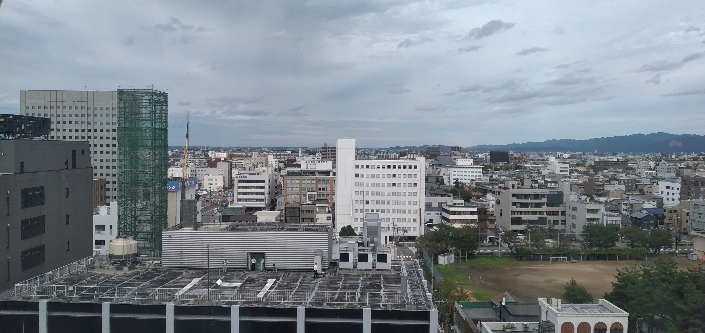

|
 |
Ajay Agarwal अजय
MEXT Research Student Scholar 2023 University of Fukui, Fukui, Japan Email - adniajay@gmail.com neuro notes blog |
|
I will be joining the Department of Information Science (GEPIS) at University of Fukui (Japan) as a Master's student (MEXT scholar) in 2023.
I am currently an Computer Science undegraduate with specialization in Data Science from DIT University, Dehradun.
|
Selected Publications
|
Turing Machines Behind the Horizon: Modeling Black Hole Interiors as Transfinite Limited Turing Machines |
||
|
Variable tradeoff between diversification and volatility on risk-averse approaches to crypto-allocation for Indian retail investors |
||
|
The Accidental Checkmate - Understanding the intent behind sharing misinformation on social media during COVID-19 using game theory |
||
|
Understanding the role of Feature Engineering in Fake News Detection |
Research Interests
Quantum Complexity Theory
Geometric Complexity Theory
Quantum Holography and applications in LQG
Explainable AI and Ethical AI
Epistemology of Misinformation
Awards and Honors
MEXT Research Scholarship by Japanese Government , 2023
Student Delegate at Harvard Project for Asian and International Relations HPAIR, Harvard University, 2022
DIT University's Student Reward and Recognition for Category "Projects, Research and Publication" as Undegraduate student, 2021